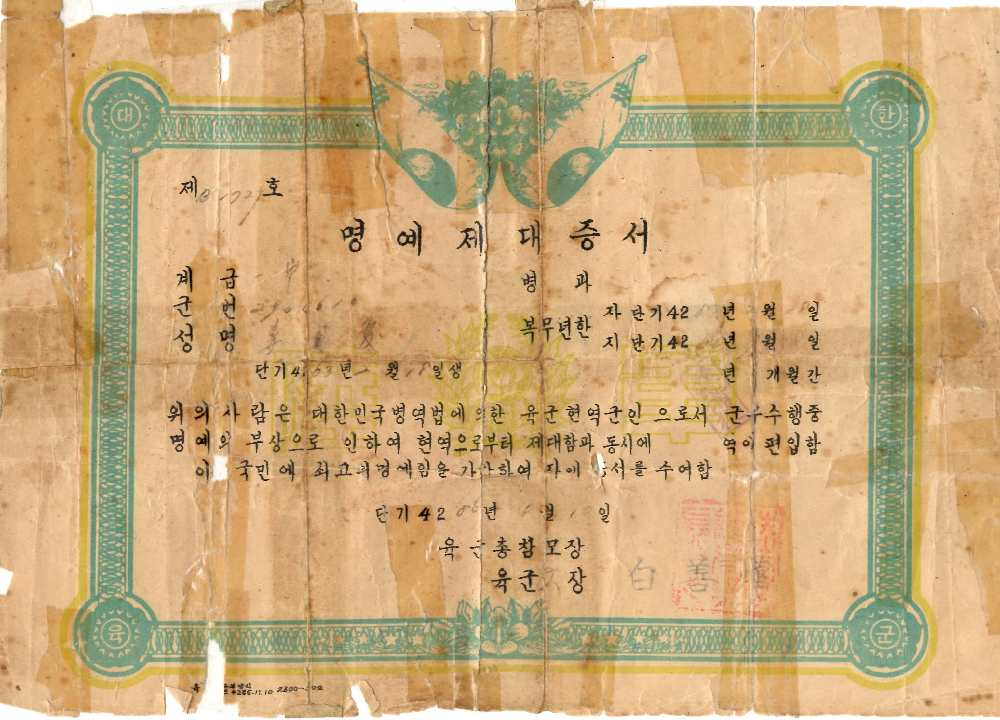
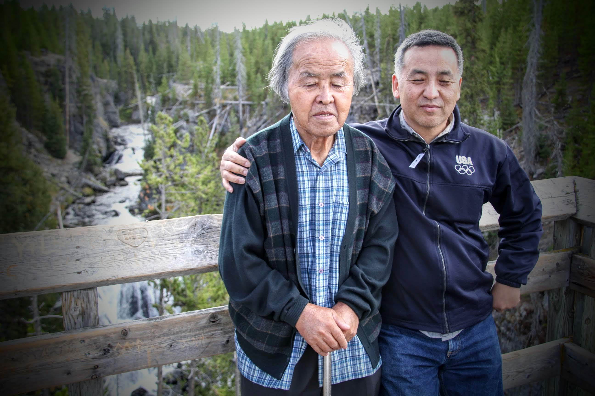

Private, Two-nine-oh-four-six-ten (2904610)
That was my father’s military ID during the 2 years he served in the Korean Army.
He had completed his basic training and was home during a short leave.
On the morning of Sunday, June 25th, he was urgently called into the battle.
He and hundreds or nearly thousands upon thousands of his fellow country (young) men.
See, tabulated figures here
While in Korea, Sister K contacted various military agencies to find out if any wartime records were kept. Related to my father’s company.
A partial list include,
보훈청 (02-2125-0866) Veterans Affair https://www.mpva.go.kr/mpva/index.do
서울지방병무청 (02-820-4355) Military Manpower Administration https://www.mma.go.kr/eng/index.do
육군본부민원실 (042-550-6474) Ministry of Defense https://www.mnd.go.kr/mbshome/mbs/mnd/subview.jsp?id=mnd_030200000000
육군본부 (042-550-7355) Republic of Korea Army https://www.army.mil.kr/sites/army/index.do
They were kind and told us to file an inquiry, they will perform a detailed search.
At the same time informing us not to expect much.
For personal or detailed information was not kept during the war, especially if the soldier’s rank was Private.
Consistent with the standard record keeping and recognition, those that sacrificed most is least recognized.
However, my father was recognized and rewarded by the Korean Government, during the latter part of his life.
Each summer brings several commemoration dates that bring back memories of my father.
Beginning with the Memorial Day (latter part of May), D-Day ( 6th Day of June), start of the Korean War (25 June 1950) and the signing of the armistice (17 July 1953).
However, our father left us with his personal account of the Korean War.
명예제대증서 (Certificate of Honorable Discharge)
Born 1930 (4263)1
Served from 1950 (4283) to 1951 (4284)
Given honorable release 1953 (4286)

He recalled,
After about 6 months of fighting only myself and another person was left, that wasn’t killed or injured in my company, about 100 fighting men.2
He said he was involved in major battles of the Korean War. He retreated along with the other members. But fought along the east coast as the re-inforced UN Forces fought back.
He passed along 금강산 and went by his hometown of 안변.
Captured 3 times : escaped 3 times (in his own words)
By the time I was captured 3rd by the North Koreans, I thought my life was over. I remember the head of the group that captured me commenting,
나이는 좋은대 시대를 잘못만났다.
“A good age, but you picked a wrong era to be born in”
I had just turned 20.
I don’t know whether that commander allowed me to escape or I was lucky. I saw an opportunity to escape and hid myself on the hill on the northern side.
When North Korean soldiers noticed that I was missing, they spread out and pointed their guns to the southern hills and fired several rounds.
Had I hid on the souther hills as most escapees would, I would have been killed.
I am grateful that I was given inspiration and guidance that helped me escape.
Third time, he escaped by hiding behind on the north side, instead of the south side.
Grateful for a family that sustained him
When my father turned 60, in 1990, he visited Korea. He wanted to look up family that housed him, fed him and nursed him back to strength.
The family had lived in 강원도.3
He had some good recollections and my uncle was familiar with the area in general. However, we were not able to meet that family and express our gratitude.
Grateful Nation, Grateful Family
My father served his nation and his family faithfully.
The nation pays its tribute to all those that participated, during summer commemoration days.
Families remember sacrifice of their fathers and mothers - often. Especially on a day reserved for remembering those served the role of Fathers.
Thank you those that fought to preserve freedom, especially those that served in Korea, during 1950s.
Happy Father’s Day, Dad.
16 June 2024

Footnotes
Until 1962 Korea used 단군기원(檀君紀元), which marked the beginning of Korea at year 2333 BC. https://www.wikiwand.com/ko/%EB%8B%A8%EA%B5%B0%EA%B8%B0%EC%9B%90↩︎
https://www.wikiwand.com/ko/%EC%97%B0%EB%8C%80_(%EA%B5%B0%EC%82%AC)↩︎
https://namu.wiki/w/%EC%98%A4%EB%8C%80%EC%82%B0↩︎